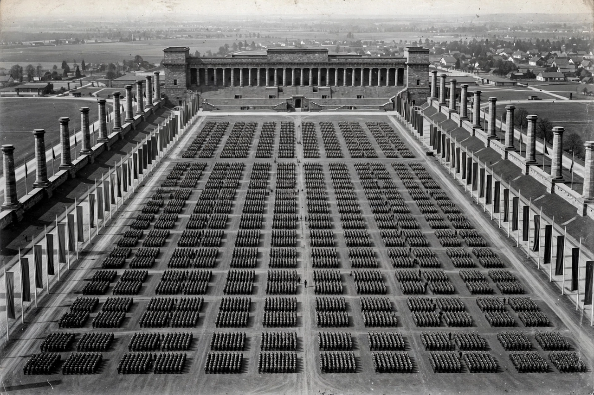

Nazism
From Wikipedia, the free encyclopedia
Nazism (also National Socialism) was the totalitarian ideology and set of practices associated with Adolf Hitler and the Nazi Party (NSDAP) in Nazi Germany (1933–1945). It was a form of fascism characterised by dictatorial power, extreme ultranationalism, biological racism — above all antisemitism — anti-communism, and the pursuit of Lebensraum (living space) in Eastern Europe.

A Nazi Party rally at Nuremberg: the regime staged mass spectacles as instruments of propaganda and control.
The Nazi regime suspended civil liberties, destroyed organised opposition, subordinated the economy and culture to the state and party, and pursued an expansionist foreign policy that precipitated the Second World War in Europe. Its racial policies culminated in the Holocaust, the genocide of some six million Jews, alongside the murder of millions of others including Roma, Poles and other Slavs, Soviet prisoners of war, people with disabilities, and political and religious dissidents. Nazism was defeated in 1945; the party was banned and its leaders tried at Nuremberg.
Ideology
Hitler's Mein Kampf (1925–26) set out the core doctrines: the supposed racial hierarchy crowned by an “Aryan” master race; the Jew as existential enemy and scapegoat for Germany's defeat in 1918 and its economic crises; the Führer principle of absolute obedience to the leader; and the rejection of both Marxism and liberal democracy. Historians debate the coherence of Nazi ideology and the relative weight of Hitler's intentions versus bureaucratic radicalisation (“working towards the Führer”), but agree on the centrality of race and antisemitism to the regime in practice.
Rise and rule
Founded as the German Workers' Party in 1919 and renamed under Hitler's leadership, the NSDAP exploited mass unemployment after 1929 to become the largest Reichstag party by July 1932. Hitler was appointed Chancellor on 30 January 1933; the Reichstag Fire Decree and the Enabling Act destroyed constitutional government within months, and rival parties, unions and federal states were coordinated (Gleichschaltung) into the regime. Rearmament, public works and terror reduced unemployment and opposition alike, while the Nuremberg Laws (1935) stripped Jews of citizenship and the November pogrom of 1938 (“Kristallnacht”) marked open violent persecution before the war.
See also
Fascism · The Holocaust · Totalitarianism · Nuremberg trials · Propaganda